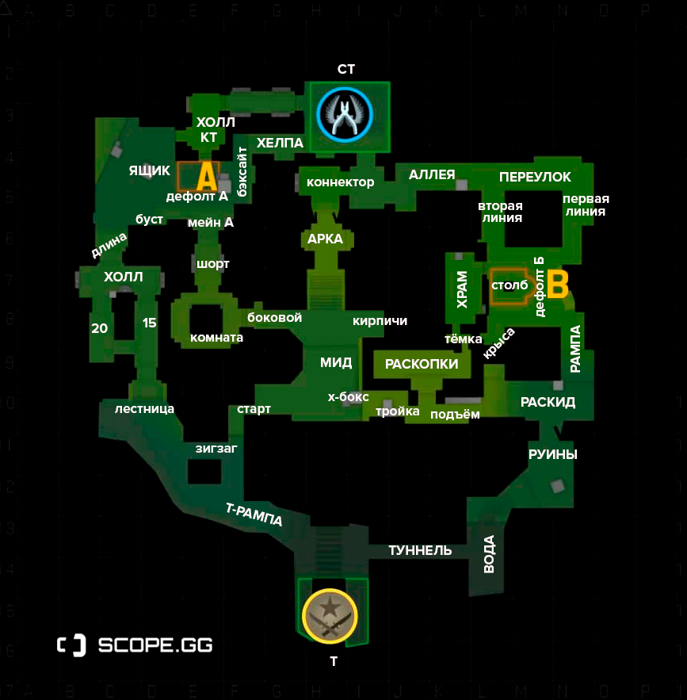
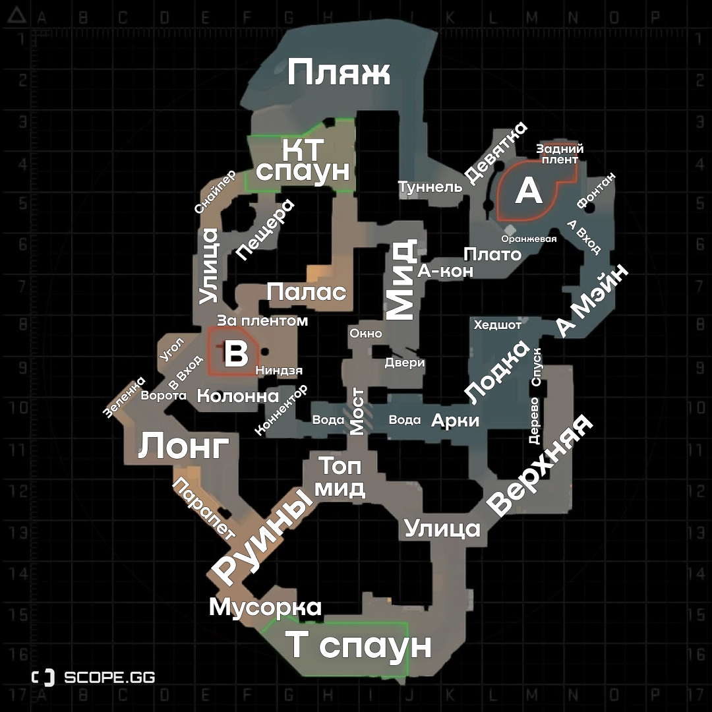
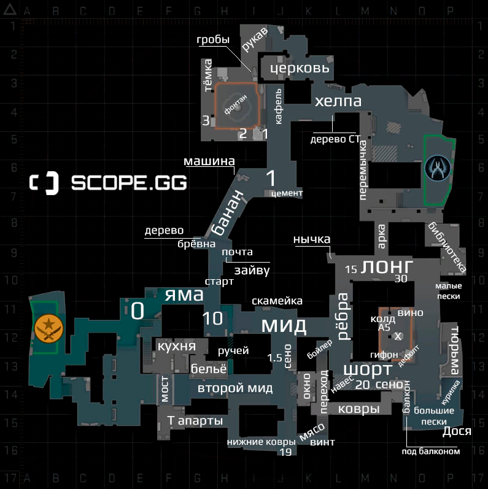
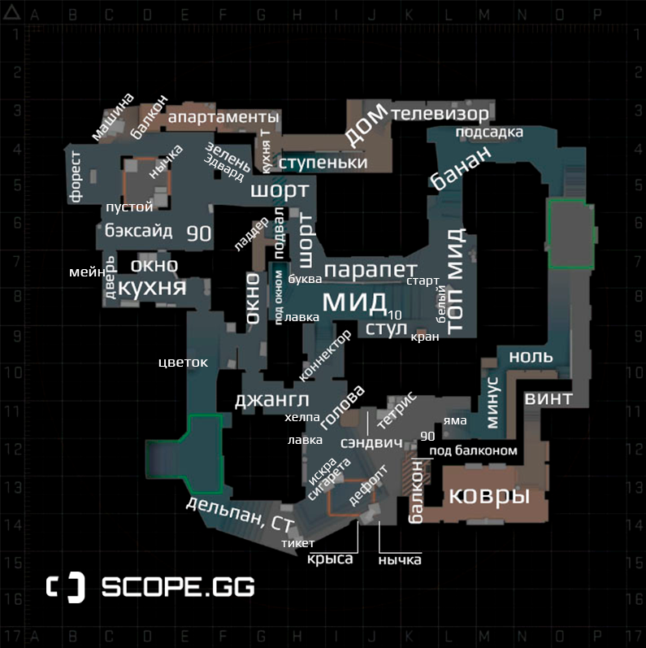
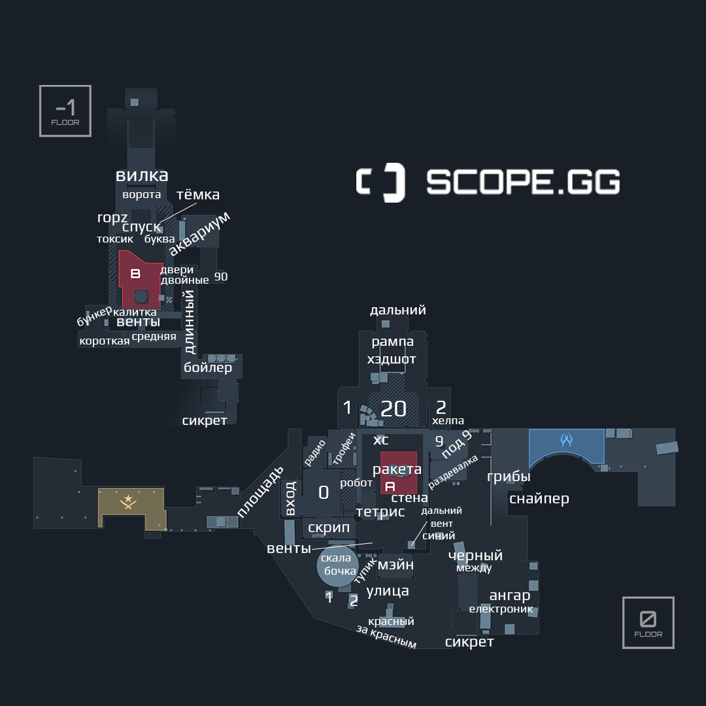
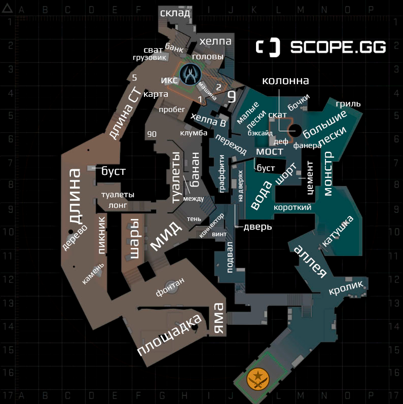
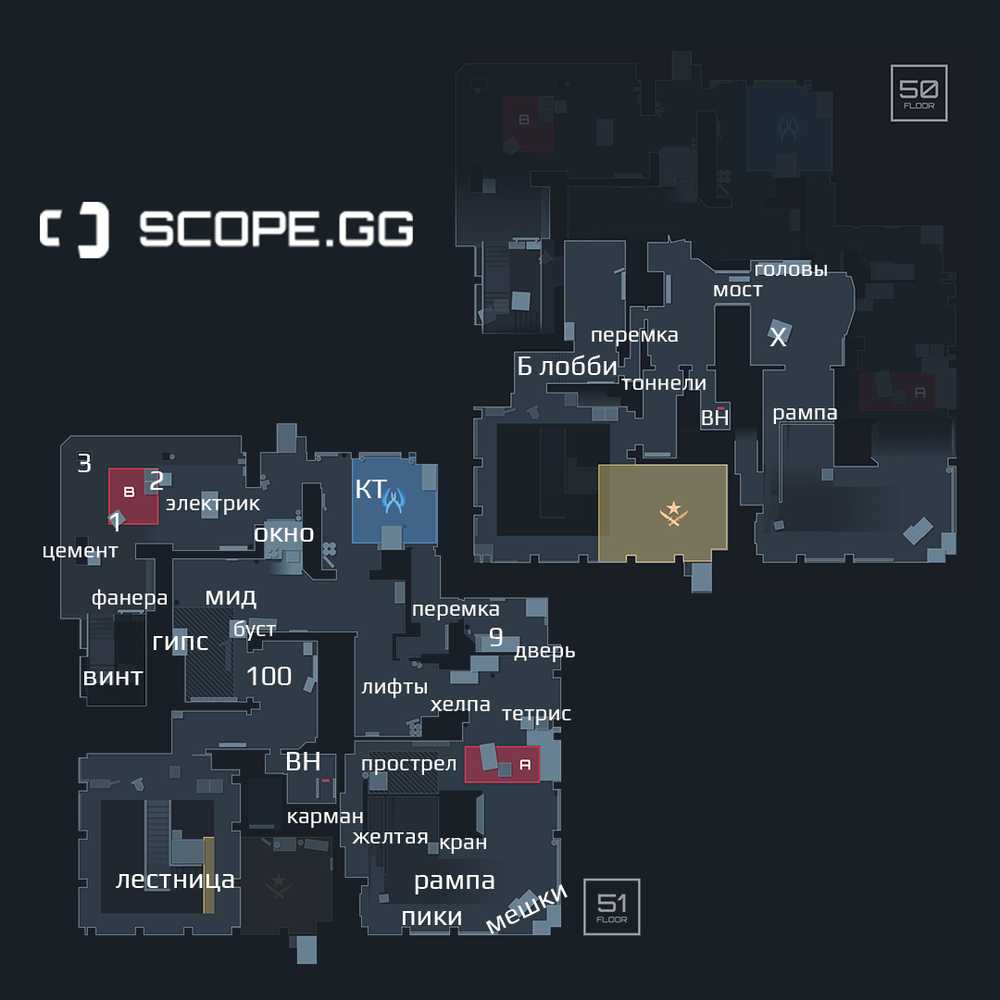

Counter-Strike: Global Offensive
Многопользовательская компьютерная игра, разработанная компаниями Valve и Hidden Path Entertainment. Выпуск игры состоялся 21 августа 2012 года. В Counter-Strike: Global Offensive игроки делятся на две команды: террористов и спецназовцев, после чего сражаются друг с другом несколько раундов, по результатам которых определяется команда-победитель.

Противоборствующие стороны
ТЕРРОРИСТЫ
Террористы, часто атака или сокращенно Т — одна из двух противоборствующих сил в Counter-Strike.
Нередко считаются «плохими парнями» или антагонистами, противостоящие «хорошим парням» — спецназу.
Что должны делать террористы в Counter-Strike?
в CS:GO есть множество карт, с разными сценариями. основных сценария только 2 — это установка бомбы и удержание заложников.
- Установка бомбы – на таких картах, террористы должны ворваться на одну из 2 специальных точек, расположенных на картах, и установить там бомбу, а после – защищать ее от спецназа, чтобы те ее не разминировали.
- Удержание заложников – на таких картах, террористы будут удерживать заложников, попутно не давая спецназу их вызволить.
СПЕЦНАЗ
Спецназ, часто защита или сокращённо КT — одна из двух противоборствующих сил в Counter-Strike. Нередко считаются «хорошими парнями» или «протагонистами», которые противостоят «плохим парням» — террористам.
Что должны делать контр-террористы в Counter-Strike?
- Разминирование бомбы – сторона и тактика защиты. На таких картах – контр-террористам придется защищать по 2 точки от террористов, которым эти точки – нужно взорвать. Условно они называются А и В. Ну а если же террористы все-таки прорвались и поставили бомбу – у вас будет время, чтобы разминировать ее до взрыва, предварительно подготовив себе площадку и перебив оставшихся террористов, а в перспективе – сделать ниндзя-дефьюз, что считается показателем высокого скилла в игре.
- Спасение заложника. А вот на таких картах – роли меняются, и атаковать уже нужно спецназу, чтобы освободить заложников из плена террористов. Теперь выгодное и тактическое преимущество будет на темной стороне, ну а спецназу уже придется разрабатывать тактики и стратегии, для убийства террористов и быстрого отступления вместе с заложниками.
CS:GO - это командная игра в формате 5*5, где побеждает более сплочённый коллектив.
Популярные карты и наименование позиций
Ancient
Несмотря на то, что многие до сих пор не выучили все закоулки в этом подобии старой карты Aztec, она не такая сложная, как кажется.
Как вы можете заметить из изображения, основные точки контакта на карте — это базы А и Б, а также миддл. Т.е. все то же самое, что и на любой другой плоской карте. В связи с этим вам достаточно выучить позиции на миддле, а также на плентах. Это даже проще, чем на карте Inferno.
Anubis
Самая новая карта в соревновательном маппуле, но уже весьма неплохая в плане баланса. Широкие аллеи и множество вариантов для неожиданных поджимов позволяют защите чувствовать себя гибко при игре на любом из плентов. А множество вариантов захода на точки А и Б и классическое расположение центра карты позволяют атаке быстрее занимать ключевые позиции для контроля всей карты.
Что нужно знать: четкие названия позиций внутри каждого из плентов. Это значительно позволит упростить коммуникацию и эффективно передать информацию о противнике тиммейтам.
Inferno
Inferno — карта, которая несколько раз переделывалась за время существования CS:GO. Авторы добавили в локацию много деталей, некоторые наоборот убрали, но, в целом, архитектура осталась прежней.
Успешная игра на Inferno — это контроль банана, обоих миддлов, а также ковров командами. Кто отвоевал себе большую часть карты, тот получает бонус к атаке или защите. Да, это единственная карта, на которой есть второй мид. Отличное место, чтобы с малым риском добежать до нужной позиции.
Что нужно знать: точное название абсолютно всех позиций на точке Б, а также основных позиций на точке А; названия позиций на верхнем миддле, а также хотя бы парочку на коврах. Как видите, все еще не сложно, но играть станет гораздо проще.
Mirage
Mirage — одна из самых простых карт. Чтобы взять контроль над ней, достаточно занять миддл, а также надежно воевать за обе точки и шорт (catwalk). Ваш минимум — это заучить подробные позиции на точках А и Б, со всеми ящиками и прилегающими коридорами. Также нужно знать название каждого угла на миддле, включая коннектор. Это около 10-15 обозначений, которые запоминаются буквально за три матча на этой карте.
Пользуйтесь техникой сходства. Т.е. «тетрис» назван не просто так, он ведь сделан из кубиков. Тикетбокс тоже имеет такое название, потому что это касса для продажи билетов (ticket — по-английски «билет»). Как видите, игроки все упростили за вас.
Nuke
Многим эта карта кажется очень сложной. Отчасти это так, потому что она многоуровневая. Т.е. в ней есть несколько этажей и ориентироваться между ними приходится по звуку. На деле же карта проста, как букварь.
Ключевые участки — это outside (yard), lobby, рампы, гараж, сикрет и оба плента. На этой карте даже нет такого количества хитрых ящиков, как на других. Учить вам придётся гораздо меньше. Просто запомните названия позиций на точках А и Б, на рампах, на улице и в сикрете. После этого будете чувствовать себя на Nuke, как дома.
Overpass
Эта карта уже посложнее. Она имеет слегка запутанную структуру, поэтому на ней часто теряются новички. Зато опытным игрокам на ней очень легко делать фейки и крутые раскидки.
Респаун контр-террористов находится прямо на базе А, что значительно упрощает удержание этой точки. До точки Б за защиту добежать тоже нет проблем, поэтому разработчики открыли возможность для крутейших раскидок гранатами.
Для успешного контроля карты необходимо захватить миддл, лонг, банан, а также коннектор. По ситуации, если вы играете за атаку, старайтесь контролировать поджим с точки Б.
Vertigo
Пусть карта была введена в маппул уже пару лет назад, но до сих пор ее недолюбливают как профессионалы, так и обычные игроки. Она многоуровневая, как и Nuke, но по площади значительно меньше. Это и не удивительно, мы просто играем на разных этажах небоскреба. Все перетяжки слышны за километр, поэтому приходится играть с постоянно зажатой кнопкой Shift.
Для нее подходят либо медленные тактики, либо очень быстрые раши, других вариантов очень мало. Игроки защиты перетягиваются быстро, зато их можно отрезать красивыми ракидками гранат.
Что нужно знать: обязательно обозначения всех ящиков и укрытий на обоих плентах, а также названия коридоров между точками. Этого вполне достаточно, чтобы дать четкую инфу. Хотите стать лучше? Учите все обозначения.
